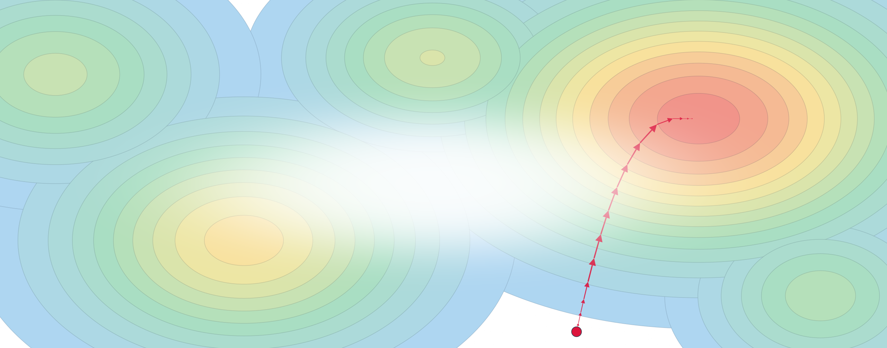
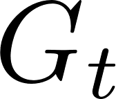
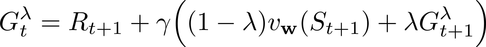
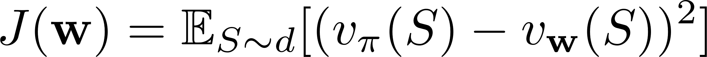
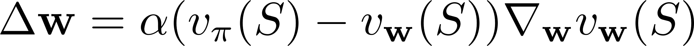
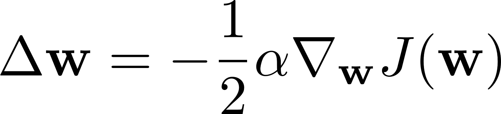
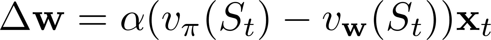
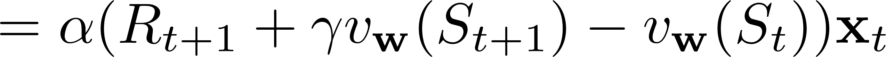

Reinforcement Learning · Lecture 7
Policy Gradients and Actor Critics

Rafael Fernandes Cunha
Value function approximation
Solution for large MDPs
Estimate value function with function approximation.


Update parameter w
Using MC or TD learning.
Generalize to unseen states
Monte Carlo:
TD(0):
TD():



Approximate Values By Stochastic Gradient Descent

Goal: Learn the state-value function


Stochastic Gradient Descent
How do we approximate the true
(target) value when sampling?

Bootstrapping methods include
only a part of the gradient. We call
them semi-gradient methods.
Linear Value Function Approximation for Prediction
Monte-Carlo: is an unbiased sample of true value


TD(0): is a biased sample of true value


TD-error
Action-Value Function Approximation
SARSA is TD applied to state-action pairs
![\begin{align*}
\mathbf{w}_{t+1} \doteq \mathbf{w}_t + \alpha \Big[{\color{blue}R_{t+1} + \gamma q_{\mathbf{w}_t}(S_{t+1}, A_{t+1})}- q_{\mathbf{w}}(S_t, A_t)\Big] \nabla q_{\mathbf{w}_t}(S_t, A_t)
\end{align*}](media/a47df3cac6.png)
Episodic semi-gradient one-step SARSA
Policy-Gradient Theorem
Goal: Find
The update is
directly proportional to the return of the trajectory
inversely proportional to the policy

The gradient
rises the log probabilities of the good trajectories
lowers the log probabilities of the bad trajectories
Variance problem on REINFORCE
The REINFORCE algorithm is based on the return of an episode!
High variance in the return
Actions have randomness because they are
sampled from a probability distribution.
The starting state may vary per episode.
The environment transition function may be stochastic.

Reducing the variance: Baseline

Without Baseline
With Baseline
All positive
Subtracting a baseline independent from the action.
![\begin{align*}
\nabla_\theta J(\theta) = \mathbb{E}_{\tau\sim p_\theta(\tau)}\Big[\nabla_\theta \log p_\theta(\tau)(G_t(\tau) - b)\Big]
\end{align*}](media/47ad4625fb.png)
Example: Average return (not the best baseline)
Why the baseline does not introduce bias in the gradient?
Advantage function
Case 1
Case 2
Inform the relative improvement caused by action a.

Advantage function!
Same Value!
7
CRITIC
Block Diagram of A2C algorithm
Time Difference (TD) error
Recall the advantage function

Mnih, Volodymyr, et al. "Asynchronous methods for deep reinforcement learning." International conference on machine learning. PMLR, 2016.
9
Agent

Policy gradient algorithms (REINFORCE)
•Suitable for continuous state and action space.
•High variance.
Value based algorithms
•Not suitable for continuous action space.
Summary on policy gradient algorithms
Actor-Critic algorithm
•Suitable for continuous state and action space.
•Low variance.
10